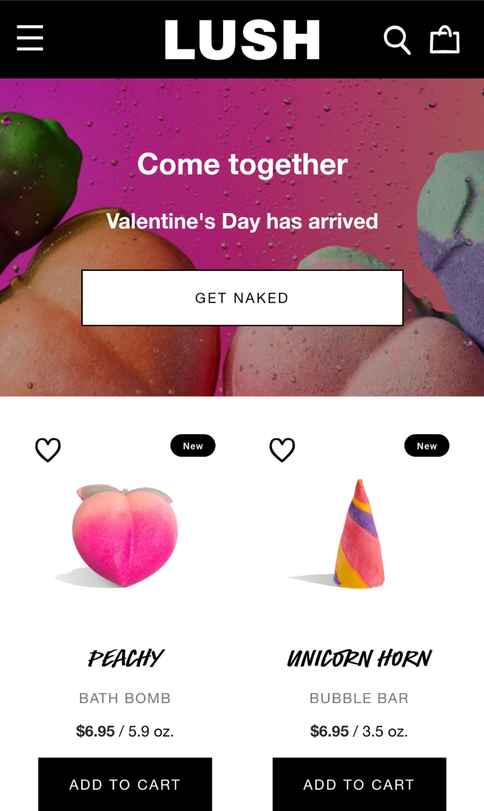
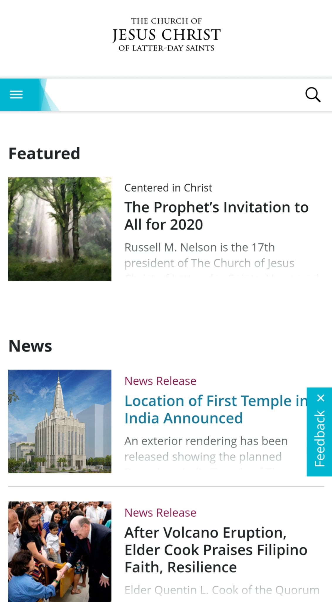
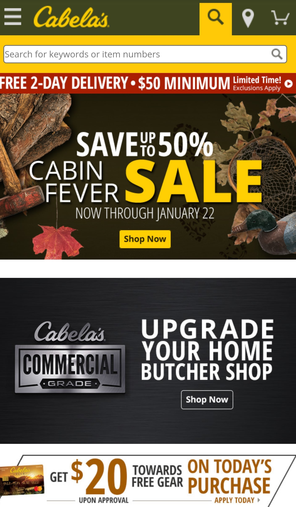

Contrast
Lush
What this website does well, is contrast. You can see the difference in the black and white title, and then the bright and vibrant colors that really seem to pop out in the website. They do a great job at making the site look clean, and having the product really contrasted into the viewers eye. By not having an extremely bright navigation bar or Title, they can make everything else pop and make the page look very clean and professional at the same time.
Repetition
Church of Jesus Christ
The Church has a really great representation of the principle of repitition throughout the site. The colors and themes match and follow all the way down. You also see recurring formatting so that you know exactly where to navigate. This helps the user know what it is they are navigating and to not get lost in the links and information.
Proximity
Cabela's
Cabela's is a great example of proximity. When you look at this webpage your eyes snap to four different things. Even though there is a lot of information on the page you know what they are because they are in direct proximity to one another. You can see the navigation, the sale, upgrade, and then the ad. If they were not grouped together like so, the page would look quite a mess.